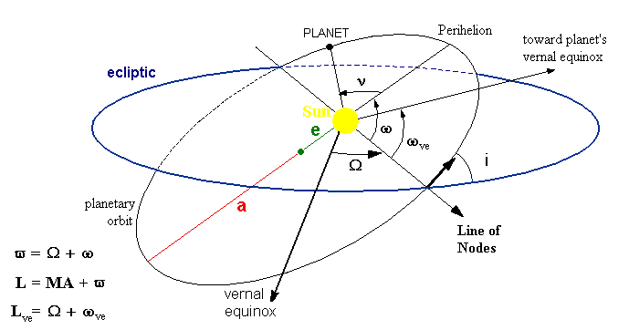

BoPlanets is a virtual planetarium, which shows the
positions of the planets in the solar system relative to an observing planet,
which can be selected out of the planets and the sun. The planets can be shown
in various views. In the ecliptic view the Cartesian coordinates, in the
equatorial view right ascension and declination, in the horizontal view azimuth
and altitude of the planets relative to an observing planet are displayed. In
the horizontal view the position of the observer on the observing planet can be
the current location of the phone (the location of the phone on the planet is the
same as on earth)or can be determined by an address (analogical to the earth as
observing planet).
A list of rise, transit and set times of a planet,
as seen by an observer on the observing planet, may be generated.
You may have a look to the epicycles of the planets, observed from the
earth or any other planet.
You can let the planets moving by single steps or let them
run continuously. The speed may be varied by a speed slider.
There is the paid version BoPlanets-Plus with full functionality and the
free version BoPlanets with restricted functionality.
The following functions are available in the Plus-Version only:
-
Views Horizon at loation and at address.
-
Determining times of rise, transits and set of a planet.
BoPlanets is started with the View
Planets and the drawer view
Settings. The view
Planets
contains the action bar at the top of the screen with the navigation button and the menus
Views,
Movement,
Rise&Set and
Help.
The navigation button toggles between the views Planets and Settings. The view Settings can be made visible by
swiping from the left hand side of the screen and invisible by swping to the left hand side.
The Planets View consists of the following elements:
- the drawing panel with the movements of the planets.
- An input field with the step size in earth days.
- A slider to vary the speed of the planets.
- Date and time of the state of the planets corresponding to the timezone and locale of the phone.
The drawer view
Settings has the following fields:
- Start Date: date and time at which movements of the planets start, corresponding to the time zone of the device or of the address of a location.
- Select Observer: for selecting the observing planet.
- Select Planets: for selecting planets to be observed by the observing planet.
- Button Ready: closes the view and applies the settings for the configuration of the planets.
The menu Views contains the following items:
- Ecliptic:
shows the planets in the ecliptic plane at their Cartesian
coordinates.
- Log. Ecliptic:
like Ecliptic coordinates, but
with logarithmic scaling of the radius vector.
- Equatorial:
shows the planets relativ to the equator of the
observer with right ascension and declination of the planet
above the equatorial plane
- Horizon at location/address (Plus version only):
shows the planets relative to the horizon
on the observing planet. The location of an observer
is at the current location of the phone (so as if the observer's phone
is on the same position as on earth) or at an location address.
Date and time are shown according to the time zone of the device,
if the location is given by the current location of the device, according to the
time zone of the address, if the location is given by address.
When selected, settings of Location access are opened,
if no location access was activated.
The menu Settings consists of items, which controls the movement of the planets.
- Time forwardthe time is running forwards.
- Time backward the time is running backwards.
- Run stepwise:if selected and after the Draw Panel
was clicked, the planets move one step.
- Run continuously: if selected the planets are moving
continuously till option Run stepwise is selected.
(s. Draw Panel)
(Plus version only)
Clicking this menu opens a panel, by
which the times of rise, upper transit and set of a selectable planet are
determined as seen from a location on the observing planet.
Elements of the panel:
- observer: name of the observing planet
- My location: the location is given by the current location
of the phone on earth. This determines the location on the observing planet.
When My location: is selected, settings of Location access
is opened, if no location access was activated.
- By address: the location is given by an address on earth.This determines
the loation on the observing planet.
- Latitude/Long.:latitude and longitude of the observer in degrees.
- Select planet: select the planet, for which rise, transit and set times are
to be determined.
- Select Rise&Set altitude:Select the altitude relative to horizon, which defines Rise
and Set of the planet.
-
center of the planet is at horizon at 0 degrees.
-
-0.56° atmosph. light refraction:
center of the planet is 0.56
degrees below horizon. Due to refraction of light in the atmosphere the
planet becomes visible; meaningfull only for the earth as observer.
- -0.83° sun up. limb at horizon:
upper limb of the sun touches horizon.
The center of the sun is 0.83 degrees below horizon. Due to light refraction and apparent diameter
of the sun the sun becomes just visible. Meaningfull only for the earth as
observer and the sun as observed planet.
- -6° civilian twilight:
center of the planet is 6 degrees
below horizon. Begin of civilian twilight.
- -12° nautical twilight:
center of the planet is 12 degrees
below horizon. Begin of nautical twilight.
- -18° astronomical twilight:
center of the planet is 18 degrees
below horizon. Begin of astronomical twilight.
- Start date: date and time, from which on the first transit is looked for.
- No of transits: the number of consecutive transits to be determined
- Buttons:
- Close: closes the panel.
- Results: shows the panel with the results.
- Start: starts determing rise, transit and set times.
The results are shown in the extra Results panel.
- Show Saved Data: opens a dialog for selecting a file containg previously saved rise/set data and shows the selected file.
Rise and set occur, when the centre of the planet
reaches the altitude of the rise/set defining altitude relatively to the
horizon of the observer's location. This definition is applied for all objects of the
solar system including the sun.
Applying the twilight and atmospheric refration definitions is meaningful only for the
earth as observing planet.
The results are shown in the Result panel. This panel contains the
following buttons:
- Top: scrolls to the top of the results.
- Parameters: returns to the panel with the input parameters.
- Save: saves the results to a html file on external storage.
If the location of the observer is given by the current location of the
phone, date and time of rise, tansit and set are displayed according to
the time zone of the phone. If the location is given by an address, date and
time are shown according to the time zone of the address.
This panel shows the positions of the planets in different coordinate systems.
If
Run stepwise is selected, clicking/touching this panel moves
the planets one step. A long click/touch clears the screen.
The coordinate axis are labeled with the dimension of the axis:
- Ecliptic and logarithmic ecliptic system:
X and Y-axis with label AU: astronomical unit= 149.598 Mio km
- Equatorial system:
label of X-axis: RA=Right ascension in degrees
label of Y-axis: DEC= declination relative to the fixed
equatorial plane of the observer planet in degrees.
- Horizon system:
label of X-axis: AZI= azimuth in degrees; azimuth of south is 0 degrees.
label of Y-axis: ALT = altitude relativ to horizon of the observer in degrees.
The orbital elements (also known as osculating or Kepler elements)
define the orbit of a planet relative to the ecliptic.
The elements of the picture below:
- vernal equinox of the earth:
Intersection of earth's equtorial plane with the apparent orbital plane
of the sun in asending direction. The line sun to vernal eqinox is
the X-axis of the reference ecliptic.
- a: big half axis of the planet's ellipse
- e: numerical eccentricity:
distance of the sun from the center of the ellipse= a*e
- Line of node:
intersection of the orbital plane with the ecliptic.
Ascending node is the point, where the planet crosses the elliptic in
asending direction.
- Ώ: longitude of ascending node:
angle from vernal equinox to ths ascending node measured in the
ecliptic plane.
- ω: argument of perihelion:
angle from ascending node to perihel measured in the orbital plane.
- ωve: planet's vernal equinox:
Intersecting line of plante's equatorial plane with its orbital plane.
- ν: true anomaly
True anomaly is the angular distance from perihelion to the
position of the planet on its ellipse.
- E: eccentric anomaly:
the eccentric anomaly of a point P on the ellipse is the
angle E at the center of the ellipse and a point Q, which is
determined by drawing a vertical line from the major axis of the
ellipse through the point P on the ellipse and locating its
intercept Q with an auxiliary circle; a circle of radius a
(the semi-major axis of the ellipse) that enscribes the entire ellipse.
The radius of the auxiliary circle passing through the corresponding
point Q makes an angle E with the major axis.

- Altitude:
the angle of a planet relative to the horizontal plane
of an observer.
- Ascending node:
position, where a planet crosses the ecliptic
in ascending direction (north).
- Astronomical unit AU:
mean distance earth-sun, 149.598 Mio km.
- Azimuth:
the angle of the projection of the radius vetor of a planet
on the observer’s horizontal plane, measured vs. south
(east: negative; west: positive, south: 0 degree).
- Date&Time:
the date and time due to the time zone of the telephone.
- Declination:
the angle of a planet relative the equatorial plane
of the observing planet.
- Descending node:
position, where a planet crosses the ecliptic
in descending direction (south)
- Ecliptic:
the reference plane of the solar system.
The x-axis is given by the line sun to vernal equinox
of the earth.
- Equatorial plane:
the plane parallel to the equator of a planet
- Greenwich meridian:
the meridian with geographical longitude 0 degrees.
As convention for other planets than earth this meridian is defined as that
one, for which the sun passes its lowest altitude at 2001-Jan-1, 0:0hr.
For the sun as observer the Greenwih meridian is defined as that one,
which was parallel to the line of vernal eqinox at
at 2001-Jan-1, 0:0hr.
- Greenwich Mean Sidereal Time (GMST):
the angle of the Greenwich meridian vs. the planet's vernal equinox in degrees.
- Horizontal plane:
tangential plane at the observation point on a planet.
- Latitude:
angular position on a planet measured vs. equator (north: positive, south: negative)
- Local Mean Sidereal Time (LMST):
the angle of the local meridian vs. the planet's vernal equinox.
LMST=GMST + longitude of the meridian.
- Location on an observer planet:
is defined by geographical latitue and longitude of the
current location of the phone or an address on earth.
- Longitude:
angular position on a planet vs. the Greenwich Meridian (east: positive, west: negative)
- Obliquity:
inclination of planet's rotation axis vs. the orbital plane.
- Orbit:
movement of the planet in it's plane
- Orbital (Keplerian) elements of a planet:
(s. Orbital Elements)
- Orbital period:
time of one revolution around the sun.
- Perihelion:
the position of the planet on its orbit with minimum distance to the sun
- Right ascension:
angle of the position of a planet vs. the vernal equinox
in the fixed equatorial system of the observing planet.
- Rise of a planet:
coming from below horizon the centre
of the planet reaches the rise defining altitude relatively to the horizontal
plane of an observer on the observing planet.
- Rise/Set defining altitude:
(s. Menu Rise&Transit&Set)
- Set of a planet:
coming from above horizon the center
of the planet reaches the set defining altitude relatively to the horizontal
plane of an observer on the observing planet. This is valid for the sun
also.
- Sidereal day:
time to rotate 360 degrees around the axis of rotation (earth: 0.9972 *24 h)
- Sun day:
time to rotate once to the same position of the sun (earth: 24 h)
Version 2.4.0
Published: xx.xx.2024
- New: Adaption to required Google Policies.
Version 2.3.5
Published: 24.08.2023
- New: Adaption to Android 14.0.
- Bugfix: Corrections of Google policy violations.
Version 2.3.4
Published: 27.12.2021
- New: Adaptions to Android V12.0
- New Plus version: The results of Rise/Set are stored in the shared storage
instead in the app specific storage. So other apps as file managers or browsers can
access these results.
- Smaller corrections in drawing the planets.
Plus Version 2.3.1, Free Version 2.3.2
Published: 10.01.2021
- New: Adaptions to Android V11.0
- New: The start date may be entered with or without the time.
- New Plus Version: Shows Rise/Set Data, which were saved to a file.
In Android V11.0 file managers can no longer access app specific data. Using this new function
saved rise/set data can be shown.
- Bugfix: entering start date and time was not possible.
- Bugfix Plus Version: selecting a locationby address always returned an error.
Plus Version 2.2.6, Free Version 2.2.8
Published: 18.05.2020
- New for Android version >=5.0 Lollipop: If a new version is available, the user is asked to install the new version.
- New: Minor modifications of the user interface.
- New: Adaption to Android 10.0
- Bugfix Plus version: The view Rise/Set is not completely shown in landscape mode on some devices. It is now scrollable.
Version 2.1.4
Published: 21.01.2020
- Bugfix: When the planets are running in continous mode and the screen is shut off and then shut on again,
then the planets are stopped and are not running continuously.
Version 2.1.2
Published: 16.01.2020
- Change: Start date with date and time.
- Change: Modifications of planets settings are effective after closing the Settings view even if the Ready button was not clicked.
- Change Plus version: when location is not enabled on the device, the location settings are opened.
- Bugfix Plus version and Android 9.0 and above: when horizontal view or Rise&Set view is called for a location of an address, the time is not
given as local time of the address but as the default time of the device.
Version 2.0.2
Published; 26.08.2019
- Bugfix: Forced stop on devices with Android 4.3, when planets are running continously and a Start Date was entered (possibly more times).
Version 2.0.1
Published; 08.11.2018
- Free version BoPlanets 2.0.1:
- Bugfix: Forced stop on devices with Android 4.3, when planets are running continously, the field Start Date was focused and the device was rotated several times.
- Bugfix: When BoPlanets was put to background by the Home key and re-activated, the start date was set to 1.1.1970.
- Version BoPlanets Plus 2.0.1: as version V2.0.0
Version 2.0.0
- Adaption to Android V9.0.
- New: Setting of observing planet and planets to show are now done in the drawer view Settings. This view
becomes visible by swiping from the left side of the screen or by clicking the navigation button at the left side of the action bar
at top of the screen. Swiping the view to the left side or clicking the navigation button shows the planets view.
- New: Input field Start Date; date, at which the planets are started.
- New: The back button closes the open drawer Settings. If the drawer is not opened the back key finishes the app.
Version 1.0.2
-
For Android version < 3.0 menus are represented by icons in
the action bar, as hitherto for versions >=3.0. Overflow items
become visible by clicking the menu button.
- Bug fix: If an invalid value was entered in an input field,
the activity could only be closed after entering a valid value.
- Bug fix: Since Android version 4.3 a forced close happened
some times, after the device was rotated.
Version 1.0.1
(Plus version only)
- Bug fix: when a dialog was opened (e.g. Horizon at address)
and the home button was clicked, the error message leaking window
was issued. Sometimes a forced close happened.
- When Horizon at location is selected and location
access was not activated, settings of Location access
is opened.
- When Horizon at address is selected and no network
connection was activated, settings of the device are opened.
BoPlanets: Copyright (c) Bernd Ostermann 2013;
eMail: ostermann.bernd@googlemail.com